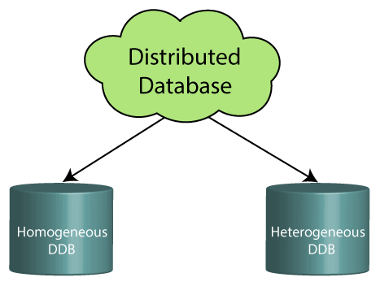
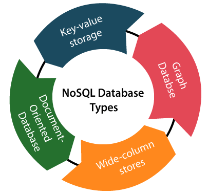
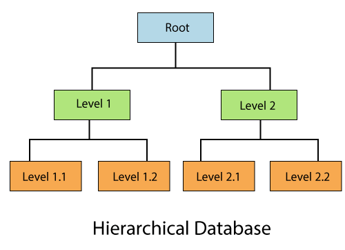

It is the type of database that stores data at a centralized database system. It comforts the users to access the stored data from different locations through several applications. These applications contain the authentication process to let users access data securely. An example of a Centralized database can be Central Library that carries a central database of each library in a college/university.
Unlike a centralized database system, in distributed systems, data is distributed among different database systems of an organization. These database systems are connected via communication links. Such links help the end-users to access the data easily. Examples of the Distributed database are Apache Cassandra, HBase, Ignite, etc.
We can further divide a distributed database system into:
This database is based on the relational data model, which stores data in the form of rows(tuple) and columns(attributes), and together forms a table(relation). A relational database uses SQL for storing, manipulating, as well as maintaining the data. E.F. Codd invented the database in 1970. Each table in the database carries a key that makes the data unique from others. Examples of Relational databases are MySQL, Microsoft SQL Server, Oracle, etc.
There are following four commonly known properties of a relational model known as ACID properties, where:
A means Atomicity: This ensures the data operation will complete either with success or with failure. It follows the 'all or nothing' strategy. For example, a transaction will either be committed or will abort.
C means Consistency: If we perform any operation over the data, its value before and after the operation should be preserved. For example, the account balance before and after the transaction should be correct, i.e., it should remain conserved.
I means Isolation: There can be concurrent users for accessing data at the same time from the database. Thus, isolation between the data should remain isolated. For example, when multiple transactions occur at the same time, one transaction effects should not be visible to the other transactions in the database.
D means Durability: It ensures that once it completes the operation and commits the data, data changes should remain permanent.
Non-SQL/Not Only SQL is a type of database that is used for storing a wide range of data sets. It is not a relational database as it stores data not only in tabular form but in several different ways. It came into existence when the demand for building modern applications increased. Thus, NoSQL presented a wide variety of database technologies in response to the demands. We can further divide a NoSQL database into the following four types:
A type of database where data is stored in a virtual environment and executes over the cloud computing platform. It provides users with various cloud computing services (SaaS, PaaS, IaaS, etc.) for accessing the database. There are numerous cloud platforms, but the best options are:
It is the type of database that stores data in the form of parent-children relationship nodes. Here, it organizes data in a tree-like structure.
Data get stored in the form of records that are connected via links. Each child record in the tree will contain only one parent. On the other hand, each parent record can have multiple child records.